Sterrenstof aims to create userfriendly website where the design adds to the feel of the company. Every project is tailor-made, build from the ground up, with heart.
For any questions, wanderments, inquiries, or you feel like starting an adventure together, please do not hesitate and contact me. I would love to hear from you.
- Services
- UI/UX Design
- Web development
- Shopify e-commerce
- Front-end
- SCSS
- JS6
- Shopify (Liquid)
- Back-end
- Node.js
- Express
- MongoDB
Sterrenstof
Warschauer Strasse 69, 10243 Berlin
coysmantom45@gmail.com
Tom Coysman, owner and CEO
Identifikationsnummer: 83345207312
http://www.sterrenstof.space/
E-commerce website that carries over the elegance and purity of the product.
Visit website About this projectVeryas Child
Veryas Child is a beauty company established in 2020 by Johanna and Edna Kleine-Birkenheuer, and is headquartered in Berlin, Germany. They formulate skin, hair and body care products of the finest quality, sourced on plant-based and laboratory-made ingredients.
The client was looking for an e-commerce website that carried over the elegance and purity of their product into the website.
The Challenge: create a unique e-commerce brand
Therefore we opted for a deepgreen, together with a very light pinkwhite, to create a luxorious atmosphere.Veryas child was created as an e-commerce website, whilst also serving as an introduction for a beautiful young brand. As colours we chose a dark green to make the banners pop and guide the eye across the different sections. The landing page is dominated by the orange colour to highlight the current signature product. As you scroll down several more banners appear following a blog-like aesthetic, the header stays visible to create a feeling of orientation.
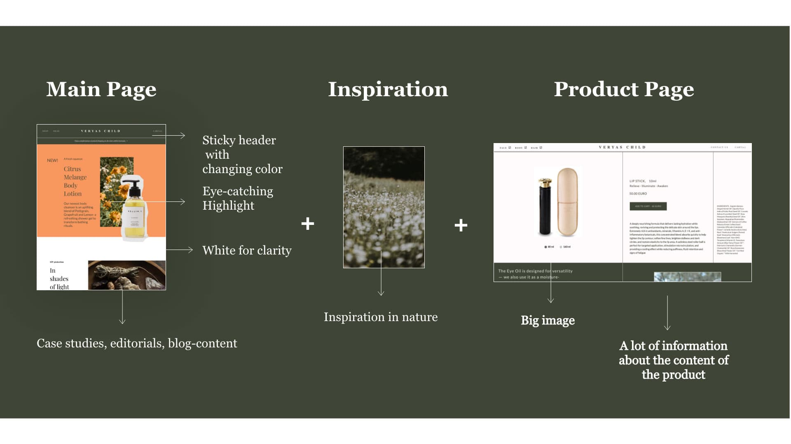 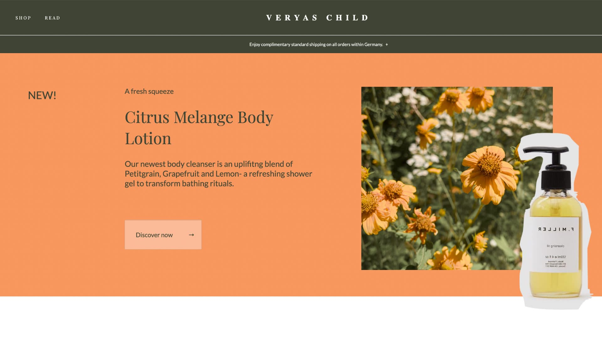 Most dominant is the signature green on the about page, which is easily accessible through the header. A simple about page with elegant lines, drawing attention to a photograph of the product and an intriguing quote that invites to read further on. The strong contrast between the sections left and right is used to the brands advantage by pointing out the dos and don`ts of a conscious brand. 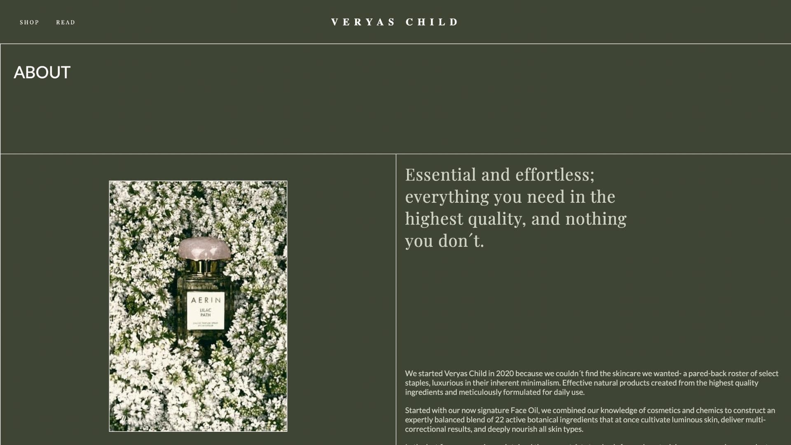 The shopping page is clearly organized and very intuitive, again using the signature green and simple white to keep the focus on the individual products and making it user-friendly. 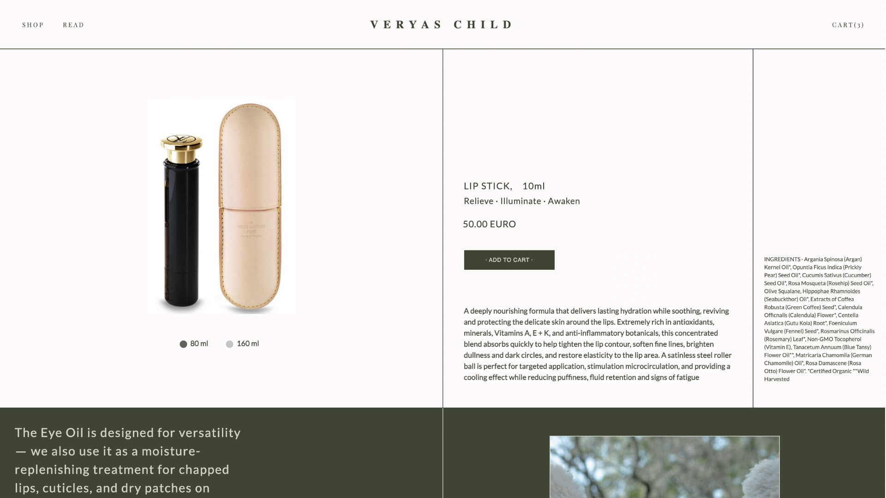 Once you choose a product you are redirected, bringing back the landing page feeling of a blog with editorials and thorough explanations on the product. The suggestion section at the bottom, as to what might also interest the user, is an intrigue to keep exploring the page. 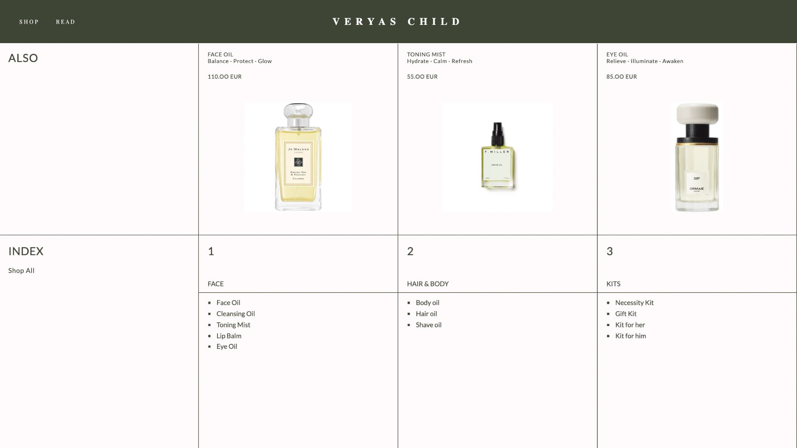 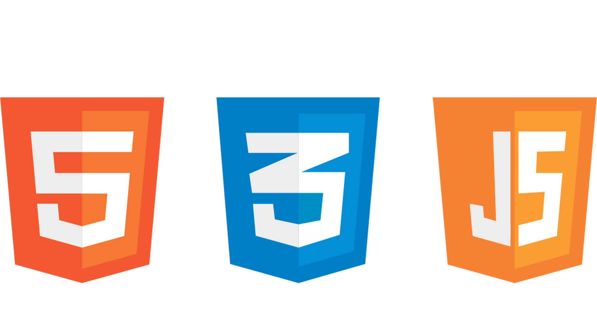Contact me
Yanji Yoga is a single page website, designed to be simple and easy to use. The site acts as a modern businesscard: beautiful, to the point, and professional.
Visit website About this projectYanji Yoga Website
Located in Berlin, Germany, Yanji Yoga is a yoga studio started in 2020. The asana practice ranges from traditional Hatha to the modern Chinese Yin style and is taught partly in the open air and partly in studios.
For this project the client approached me to make something simple, elegant and easy to navigate. Essentialy, it should give the user some vital information about the practice (the where, when, how´s), whilst still adding the aesthetic that the practices strives for.
The Challenge: create an inviting businesscard
Therefore I opted for a single window, so the user never needs to scroll (and get lost), where the information replaces itself based on the wishes of the user. The image in the background is the logo of the Yoga practice, and is therefore the perfect element bring the information and the feel of the practice together.
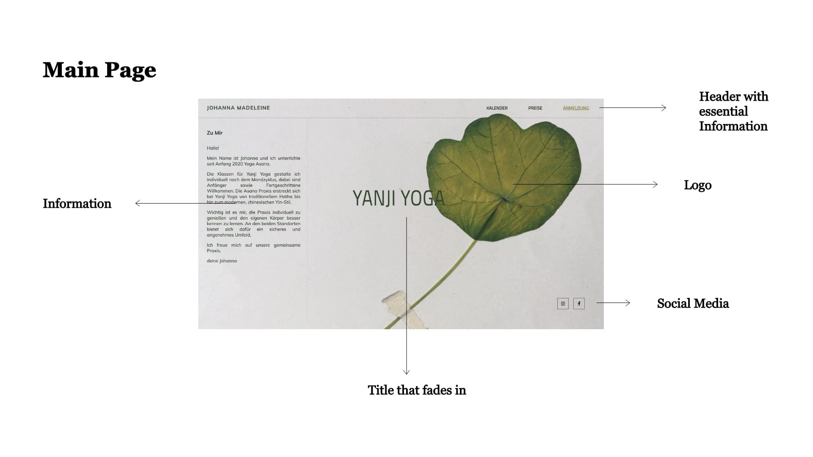Contact me
For my portofolio website I wanted to show the simplicity and elegance that Sterrenstof stands for, whilst still showcasing the fun and unique capabilities of custom webdesign .
About this projectFaced with the challenges of today, many people and business seek to represent their brand online. For good reason too- it makes their brands accessible and appealing to a seemingly endless amount of people, all for a fraction of the cost. The digital world, however, is also saturated. The internet has become a very loud place, where it is hard to have your voice heard. That is why custom webdesign is more important than ever. Users come to website for two reasons: to gather information, and to get discover what this brand could mean for their lives. Pre build options only succeed at the first. As you have worked so hard to establish a brand and build an identity for your company, it is a shame to loose that in an uninspired and forgettable website.
The Challenge: Build something unique and impressive
This is where Sterrenstof provide solutions. Custom webdesign can make your come brand to life, and create a unique shopping experience. Every brand is different, every brand has a uniqueness that it can bring to the world. It is our job to translate that into a webpage.
For my own website I wanted to show the simplicity and elegance that Sterrenstof stands for, whilst still showcasing the fun and unique capabilities of custom webdesign. Therefore I opted for the single window, a personal favorite, thus allowing an interesting juxtaposition between a minimalistic left side organized with essential information, and a unique approach to showcasing projects on the right hand side.
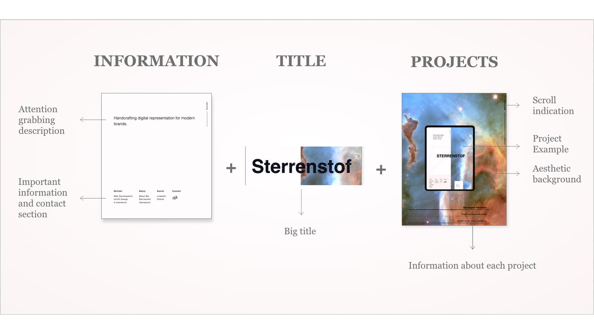Finally this contrast is overcome and returned back into its former simplicity by this section, where the user finds details about the distinct projects, as a place where the eye can rest and soak information. That way this website counts as a testimony that websites can be complex without having to sacrifice usefulness- and that not every site has to be a scrolling race to the bottom.
This website is made with HTML, CSS and Javascript, where CSS is used to take full advantage of the available space to transform and rotate elements. Javascript is responsible for the timing of these viewport effects.
Contact me
CANON is an art project
Visit website About this projectCANON
For this design the goal was to create a website that would function as a blog where you can read up on the lastest exhibition, whilst being able to add your favorites pieces to your wishlist. That way, over time, you gather your own collection of artworks into an exhibition.
The website uses the Public API of the Metropolitian Museum of Art as it´s information.
All the images are loaded either randomly, or based on the exhibition theme of the moment.
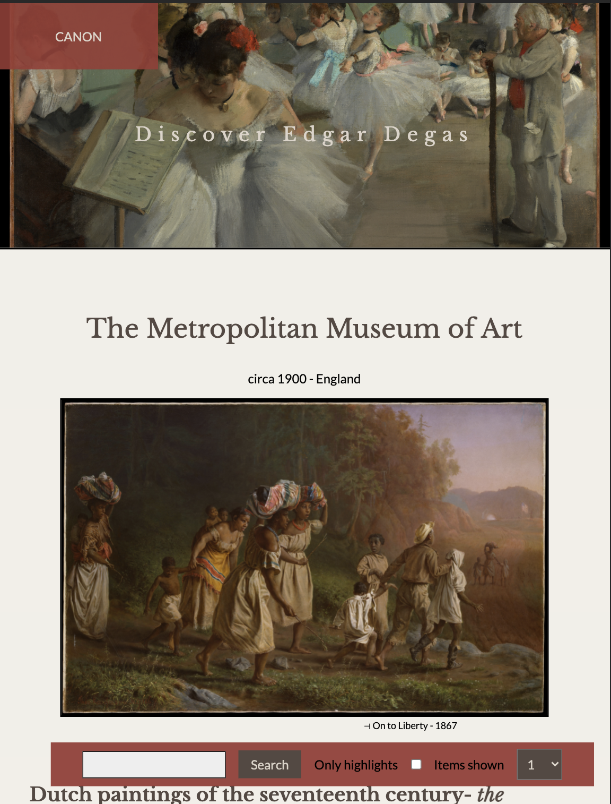The image carousel is based on the "Highlights" endpoint of the API. It displays the ten biggest highlights of the exhibition
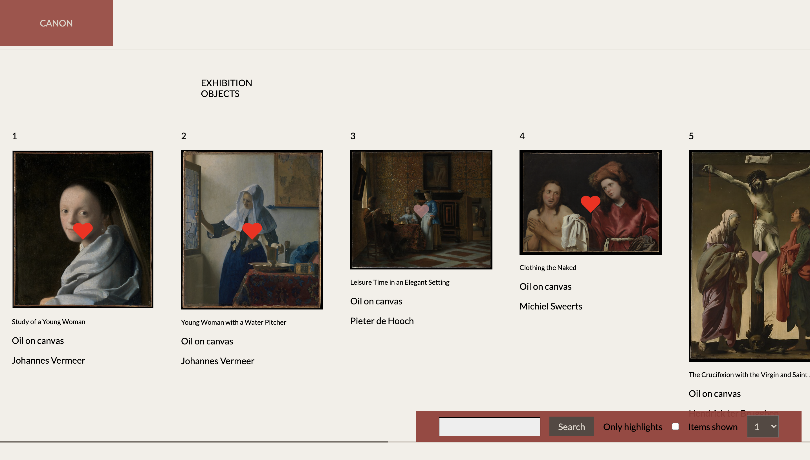The artworks selected as favorites can be found underneath the "CANON" logo

The site is fully responsive and SEO optimized
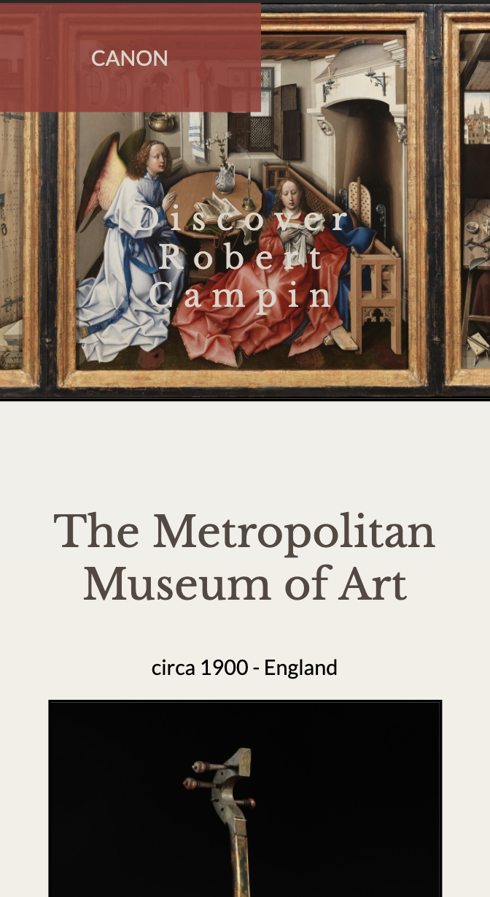Contact me